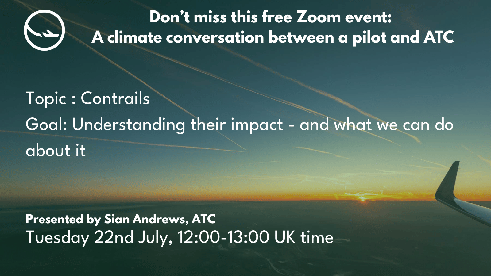

The Future of Aviation: Interview with Brian Davidson of Fathom Consulting
June 16 - 2025 • Events
🛫 Fathom Consulting talks to Finlay Asher of Safe Landing , on the side lines of the Farnborough Sustainable Skies Summit in May 2025.
Contrails are one of aviation’s biggest contributors to global heating – but they’re also one of the easiest to reduce.
With the right knowledge and coordination, we could start cutting their impact right now – rapidly lowering aviation’s contribution to warming in the short term.
So why isn’t it happening?
And what would it take to make that shift – today?
Join us for a rare, behind-the-scenes conversation between a pilot and ATC as they explore:
- What contrails are and how they form
- Why they matter more than most people realise
- What aviation could do right now to reduce contrails
- How simple operational shifts could deliver fast climate benefits – and what’s standing in the way
This is an honest, practical conversation between two people who see the skies from different angles – and believe real progress is possible when we work together.
If you love flying and care about the planet, this is a conversation not to miss.